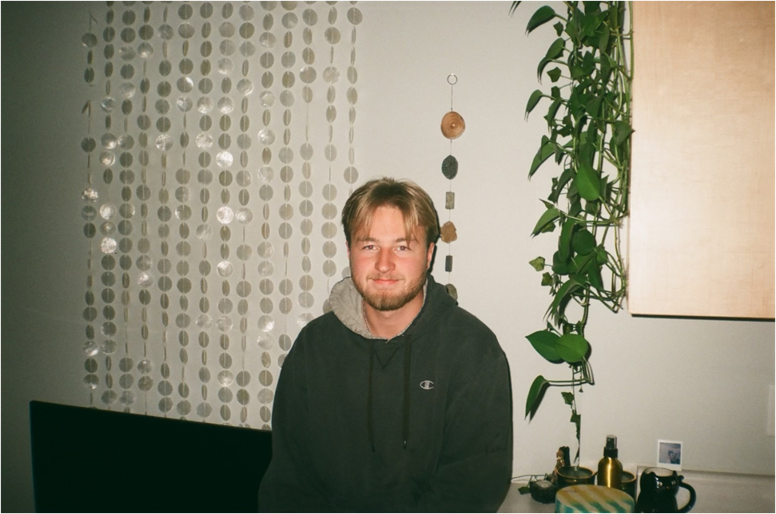
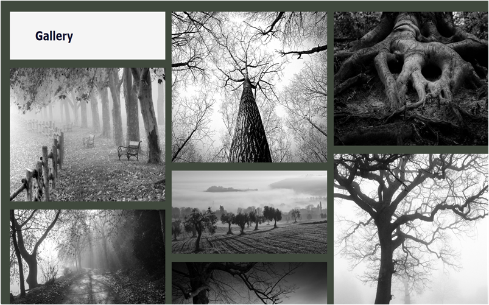
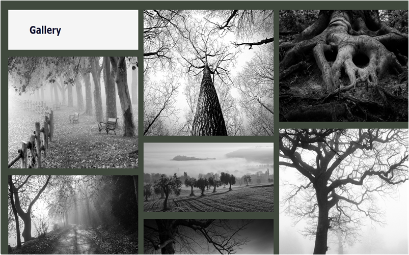

About Me
I am an information systems major who is currently in my senior year of college at the University of Wisconsin Eau Claire. My favorite hobbies include bowling, golf, and people watching. I picked up bowling two years ago now and it has become a huge part of my life. Since I picked up bowling, I travel and do tournaments at least once a month, and even work in a bowling alley now. I decided to start golfing so that I had something to do during the spring and summer when you don’t want to be inside.
Work History
I currently work at a bowling alley in Eau Claire called Wagner’s Lanes. I started working there in August of 2022, and have been there ever since. I have learned a lot working here such as customer service, fixing lane machines, and developed lots of connections through organizing leagues and events. Prior to Wagner’s Lanes, I worked at the Menards Distribution Center where I was a sorter on the conveyor belts. I would stack the pallets with items to be shipped out to stores and it was a very strategic and labor intensive job. The first job that I ever had was for five years when I would work with my step dad as a finishing carpenter on days I didn’t have school.
Educational History
I am currently finishing up my senior year of college with an information systems major out of the University of Wisconsin Eau Claire. Information systems wasn’t my first choice of major, but it is something that I am glad I found as I really enjoy it. I was originally an economics major and then had a double major with accounting and information systems. It was then that I really fell in love with information systems and how it is always growing.
Gallery
 
